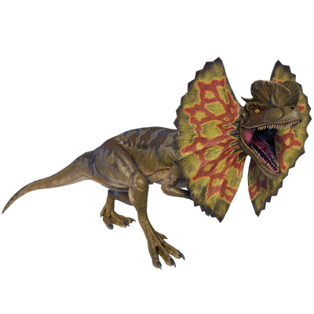

Useful Website
Dilophosaurus is a genus of large carnivorous theropod, averaging around 3m in length and 300kg in weight. It gets its name – which translates to ‘two-crested lizard’ - from the distinctive crests that sit atop its head, which are used to attract mates for reproduction. Dilophosaurus’ slender build means it can move at high speeds, while its powerful jaw allows it to keep hold of prey as it struggles to escape.
